Native · Built in Rust · Open Source
DMXexpress is a native DMX fixture visualizer and live lighting controller. Patch fixtures from a 2,200-model library, build looks, run effects, sync to live audio, busk from a Stream Deck, and watch it all happen in a real-time 3D stage — no professional console required.
The screen at a glance
Fixtures down the left, the 3D stage in the middle, the Inspector down the right, channel control under the stage. Pools like Palettes and Phasers float on top when you want them. Any panel folds away to a thin rail, or tears off into its own OS window for a second monitor.


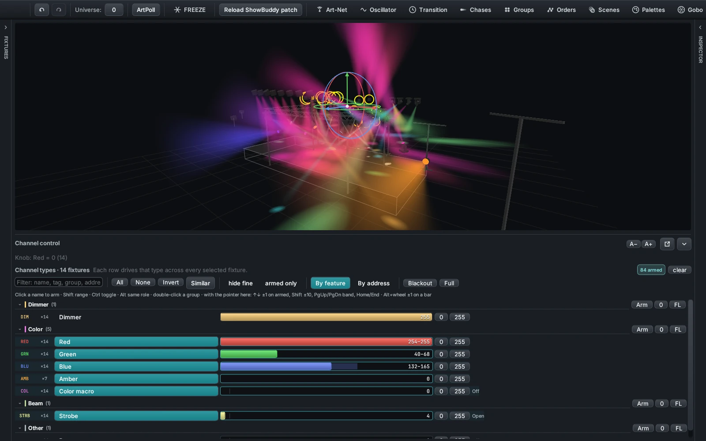

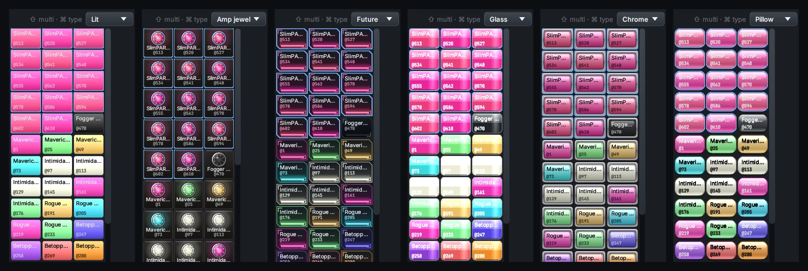
One tile per patched light, carrying its name, its DMX address, its live colour and how bright it is right now. Click to select, shift-click for more, ctrl-click to grab every light of that type.
How to use itClick a light to select it, drag the gizmo to move or aim it, and watch the beams answer. The arrow keys nudge a selection; the number keys fly the camera to an angle you saved.
How to use itFive tabs — Presets, Selection, Stage, Build, Patch. Alt + 1…5 jumps between them, Alt + I folds the whole panel away, and a context line under the strip always says what is picked.
How to use itNew · The right-hand panel
Stored looks, the selection you are holding, the camera, the truss, the patch — all of it in one column you never have to go hunting for. Press Alt + 1…5 to jump between tabs, Alt + I to fold the panel away, or roll the wheel over the tab strip.
Under the strip a context line always says what is picked — “6 lights · SlimPAR ×6”, “F34 truss 2 · 4 / 24 slots” — with the live colour beside it. Click it to jump to Selection, press the ✕ to drop the selection, or right-click it for select-all and same-type.
The panel's own state — the open tab, the width, which sections are folded, what the
stage draws — lives in inspector.json and is deliberately left out of
saved show configurations. Loading another show never rearranges your workspace.
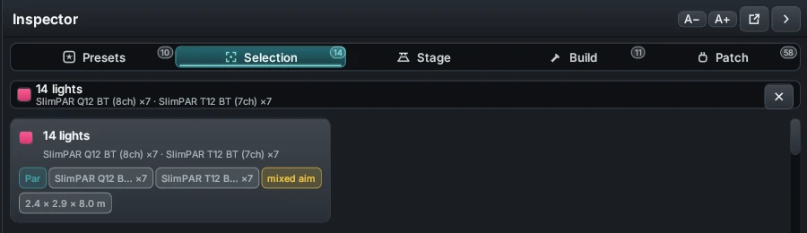
The tab strip and the context line — the line under the tabs always says what is picked.
No rig? No problem.
The built-in 3D visualizer renders your entire rig — fixture positions, colors, movement, and volumetric beams — live as you program. That means you can learn the console, build full shows, and rehearse busking sessions from your desk.
When you're ready for the real thing, the exact same show outputs over Art-Net to physical nodes and fixtures. What you rehearsed is what you run.
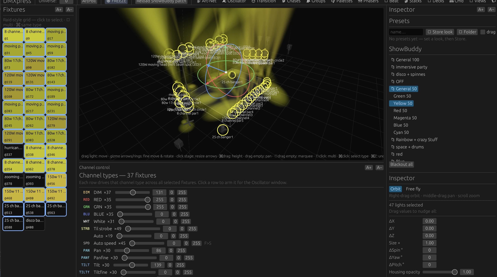
A full rig in an “All 50” starting position — shaped with pan and tilt while watching the 3D result.
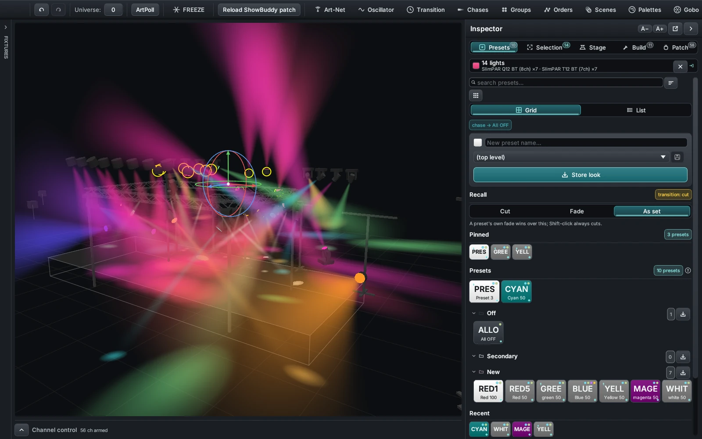
The Presets tab — every stored look is a pad, coloured by what the look actually does.
Inspector · Presets
Build a look in the Programmer, type a name, press Store look. It lands as a pad that takes its colour from the values inside it — a warm wash is amber, a cold blue is blue — so you find the one you want by looking, not by reading.
Drop pads into folders, pin the handful you reach for all night, and search the rest. Recall is yours to set: cut straight to it, fade over a number of seconds you choose, or follow whatever the Transition window is doing. Blackout sits at the bottom of the tab.
Inspector · Presets board
The board button opens a page of pads laid out exactly like the Stream Deck's Presets page. What you arrange on screen is what your thumbs will find on the keys — and if there is no deck plugged in, you still get the board.
Turn Arrange on and the page edits itself in place. Click a pad to point it at a preset. Drag one pad onto another to swap them. Right-click to clear one. Every pad gets its own colour, a four-letter label and a picture.
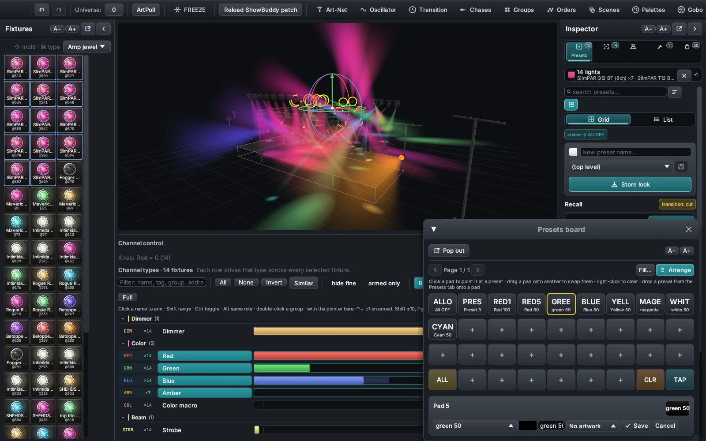
The Presets board in Arrange mode, one slot's colour, label and artwork open for editing.
Hardware busking
DMXexpress drives every Elgato Stream Deck natively over USB — no Elgato software, no plugins. The keys mirror what you build in the app, drawn live with names, colors, and artwork: whole-look presets, color palettes, gobos and wheel effects, your phaser pool, and all twelve chase shapes.
On the Stream Deck Plus XL the touch strip becomes a console readout — grand master level, tempo pulsing on the beat, the active page — and the knobs are real encoders.
Designing the deck's Phaser pages in the app — one tile per key, each with its own phaser, color, label, and artwork.
Inspector · Selection
The top card sums up what you have picked. Under it a transform grid edits X, Y and Z, yaw, pitch and size for the whole selection at once — and marks a row mixed when the selected lights disagree, so you never flatten a value you meant to keep.
Below that is the tool strip. Nudge with the pad, or with the arrow keys over the stage. Align and distribute on any axis. Mirror. Arrange the selection into a line, an arc, a circle or a grid. Aim it straight down, level, at stage centre, at a point you pick, or fanned. Set one common height for the lot. Then hang them onto a tower or a truss, choosing which face they go on and how they fill the free slots.
Pick a tower or a truss on its own and the tab becomes that structure's editor instead.
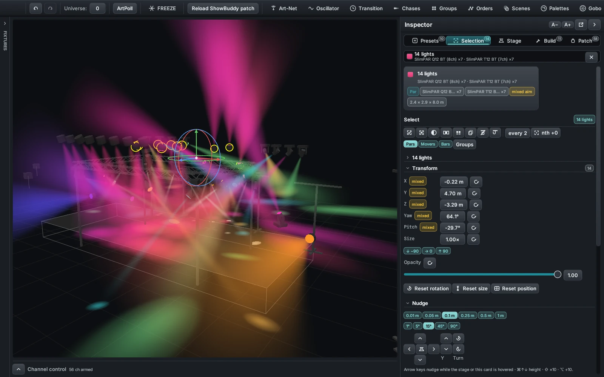
Several lights picked: the summary card, a transform row reading “mixed”, and the tools below.
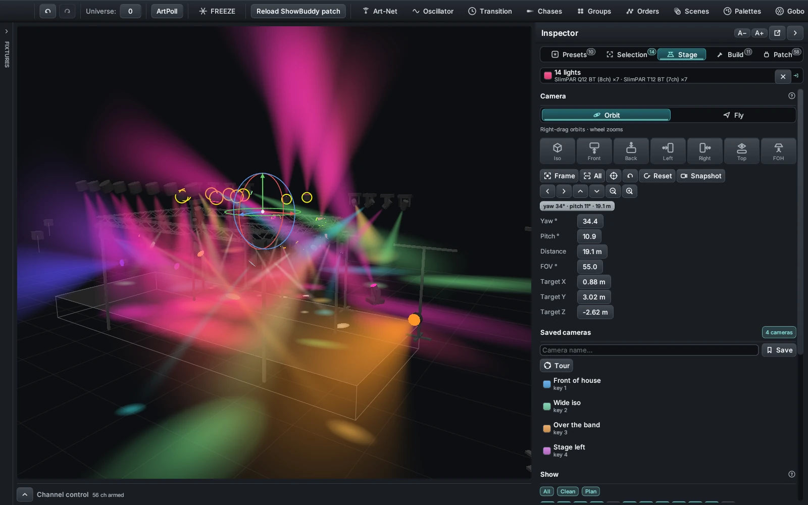
The Stage tab: camera mode, the seven quick views, saved cameras, and what the stage draws.
Inspector · Stage
Switch between Orbit and Fly, then jump to an angle with the quick-view pads. Frame the selection to fill the screen with the six lights you are working on, or frame the whole rig to see where you have got to.
Save an angle you like as a named camera, give it a number key, and press it over the stage to fly back. The Show block turns individual things on and off, with All, Clean and Plan presets that change the whole look in a click — Plan puts a name on every light and takes the beams away.
Start in seconds
DMXexpress ships with ready-made show configurations and stage setups, so you can open the app and start programming immediately — no patching homework first.
Complete show configurations live under configs/ — load one and everything comes with it: patch, groups, palettes, phasers, and cue stacks.
Stage arrangements under setups/ give you fixture layouts like full rigs and back towers you can drop into any show.
All show data is plain JSON in the working directory. Read it, tweak it, version-control it — nothing is locked in a binary format.
Because everything — fixtures, stages, palettes, sequences — is simple, readable JSON, it's remarkably easy to prompt an AI assistant to add new features, build a new stage layout, or generate fixture profiles for you. Describe the rig you want; get a stage you can rehearse on tonight.
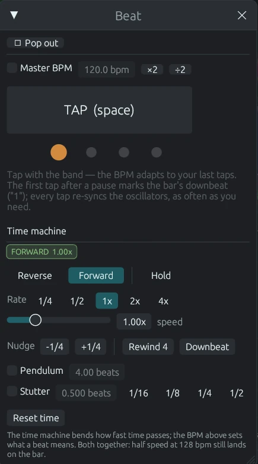
The Beat window: tap along, watch the bar, then bend time with the transport below.
Sound-reactive
Open the Audio window and pick any source your computer can hear — on Windows that includes plain system audio, so you can play a track and light it with zero cabling. DMXexpress watches the spectrum, and a beat tracker taps the tempo for you like a very patient drummer.
Then draw trigger bands straight onto the spectrum: when the bass crosses the line, throw a palette at a group. When the highs sparkle, fire a scene. Attack, release, and merge behaviour are all yours to shape.
Inspector · Build
Eight pads build the structures a real stage is made of: a tower, a straight F34 run, a radius run, or a whole goalpost, box, ring, tower pair or arch in one press. The number keys 1…8 do the same. Standard lengths, radii, arcs and heights are one tap each, so you are picking a truss rather than typing millimetres.
Under the pads, an outliner lists every element in the rig, folding a composite's parts under one heading with the lights hung on them. Click a row to select it, then rename, hide, mirror or duplicate it, or point the camera at it. Setups at the bottom save and reload a whole named rig.
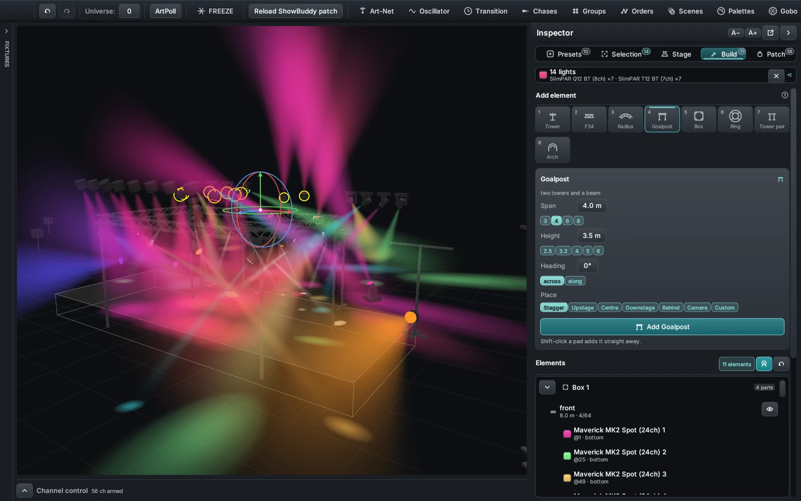
The Build tab: the eight element pads, the parameter card for the one you picked, the outliner below.
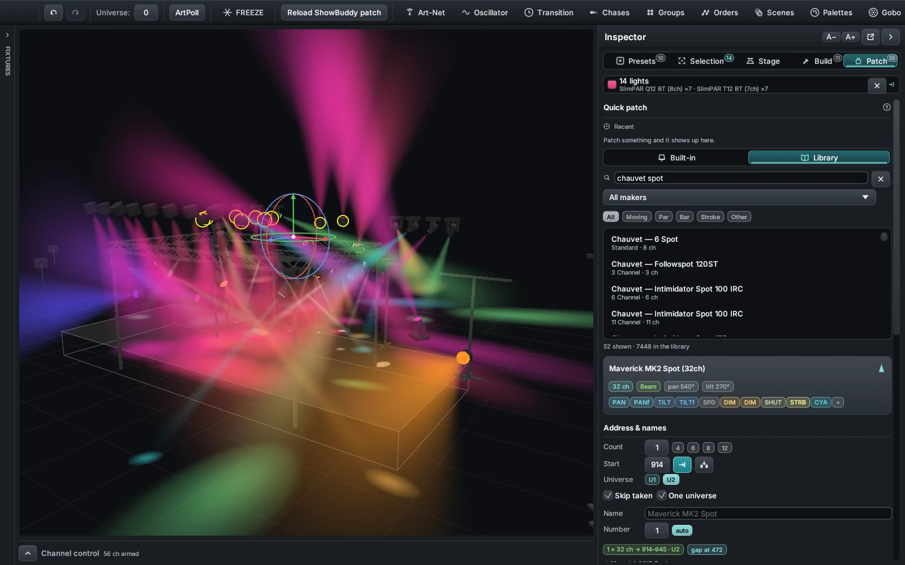
The Patch tab mid-flow — search hits, the preview card with its channel roles, then the address plan.
Inspector · Patch
Start from your recents, a built-in profile, or the library — 2,200 models and 7,400 patchable modes from more than 200 makers, searchable by name and filtered down to moving heads, pars, bars or strobes. A preview card shows the mode, the channel count, the pan and tilt ranges, and what every channel does before you commit to it.
Set a count and a start address. Next free and first gap find one for you, skipping addresses already taken and refusing to let a fixture straddle the two universes. Name them once and they are numbered for you, continuing the series already in the rig.
Slots 1–512 go to the universe you set, 513–1024 to the next one. A fixture that would sit across that line is refused the address instead of quietly breaking in the middle of a show.
The full console, explained
Each part of DMXexpress maps to a familiar lighting-console concept. Pick any card to jump straight to its how-to in the guide.
Your scratchpad. Select fixtures and set dimmer, color, position, and beam values directly. Changes are temporary until you store them somewhere reusable.
How to use itSave any fixture selection — all spots, back towers, front wash — and recall it with one tap. Chain groups together, or fold one into a single super-fixture that effects treat as one light.
How to use itEffects normally fan out in fixture number order. Build your own route instead: shift-click groups to chain them, then store that chain as the path every spread, phaser, and palette cycle travels.
How to use itReusable building blocks for color, position, dimmer, beam, focus, and control values. Update the palette once and every look that uses it follows.
How to use it2,200+ models and 7,400+ patchable modes built from the Open Fixture Library, QLC+, and GDTF Share — searchable by name and maker right in the Patch window.
How to use itReal projection in the visualizer: haze breaks into the gobo's rays and the pool shows the projected image. Pick slots by picture, or assign any PNG of your own.
How to use itCapture what the programmer is doing — waves, phase and all — and replay it as its own layer. Run several at once with Override, Highest, or Add merging.
How to use itLiving effects: movement sweeps, intensity pulses, chases, and color waves. Edit the phaser beside the live 3D result and tune it in real time.
How to use itSnapshots of the programmer you can bring back instantly — perfect for starting positions and go-to looks you reach for constantly.
How to use itRecord looks as cues with tracking and fade timing, then step through your show one go at a time — theatre-style playback.
How to use itHands-on faders for live control, with a Grand Master over everything. Assign stacks and effects, then busk the show in the moment.
How to use itPlace fixtures, towers, and truss; select lights on stage; and watch volumetric beams — gobo projection included — respond live. Pre-viz and programming feedback in one.
How to use itSends two contiguous DMX universes at ~40 fps with automatic node discovery. Optional ShowBuddy fixture-patch import on macOS.
How to use itTwelve spatial shapes — spheres, ripples, comets, spirals, cascades, chevrons, checkers and more — that inject a preset as a moving pattern through your stage in three dimensions.
How to use itTap along with the band and every effect locks to the song. Then bend time itself: run the show backwards, at half or quadruple rate, nudge by a quarter beat, or set it swinging on a pendulum.
How to use itListen to anything the computer plays, watch the spectrum, let the beat tracker tap for you, and draw trigger bands — when the bass crosses the line, throw a look at a group.
How to use itNative Elgato Stream Deck support: presets, palettes, gobos, phasers, and chases on real keys, with knobs for the grand master, the tempo, and the programmer.
How to use itF34 straight runs and curved radius truss with snap-on mount slots, plus towers — placed with 3D gizmos. And any window pops out to its own OS window for a second monitor.
How to use itFive tabs down the right: stored looks as pads, a transform kit for the selection, cameras and display switches, the rig builder, and patching. Alt + 1…5 to jump, Alt + I to fold it away.
How to use itOne tile per light with its name, address, live colour and level, drawn in whichever of six looks you like. Click to select, shift for more, ctrl for the whole type.
How to use itArt-Net, sACN, or both at once. Discover nodes, choose the interface and how packets are addressed, run a checklist that says what is wrong, fire a test pattern, watch the packets go by.
How to use itOne box at the bottom, one verb, Enter. go 2, gm 80, group 1, store, black. Faster than the mouse the moment you know it.
Arrange the windows for programming and save it. Arrange them for playback and save that. Click a view to snap every window back where it belongs.
How to use itCtrl+Shift+Z takes back the last thing you did anywhere — a slider, a stored palette, a recorded cue, a light you moved — ten steps deep. The show backs itself up every minute it changes, newest twenty kept.
How to use itProgramming
Every reusable thing in DMXexpress has its own pool window, and every pool works the same way: make it in the Programmer, name it, store it. Here is what that actually looks like.
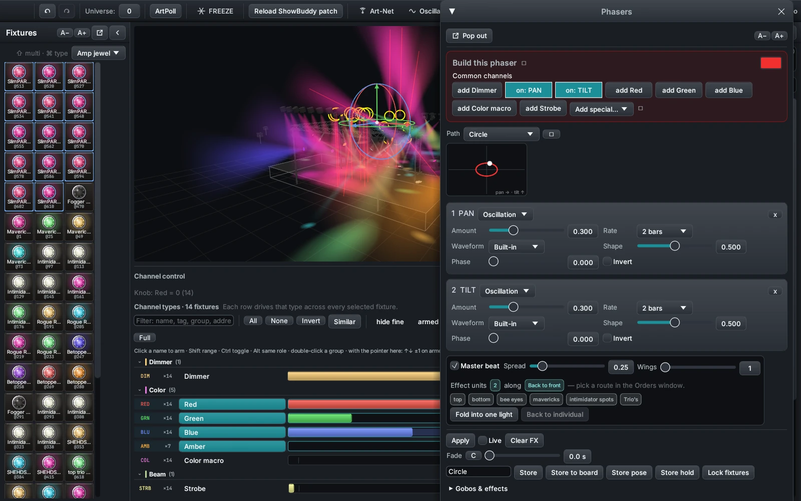
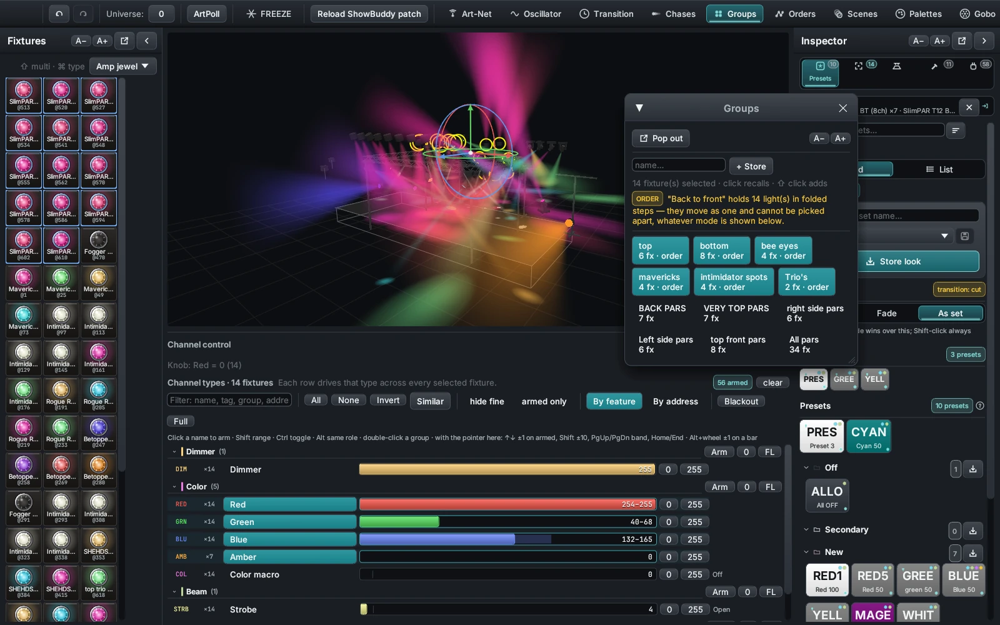
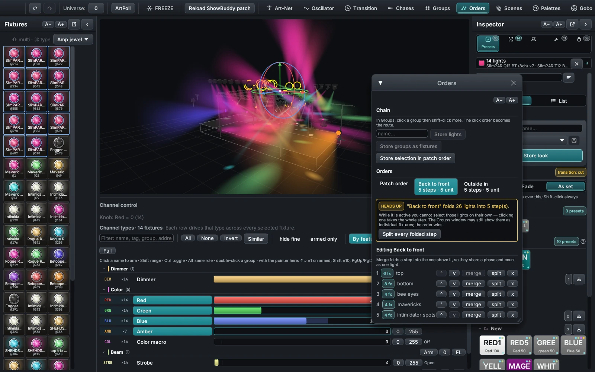
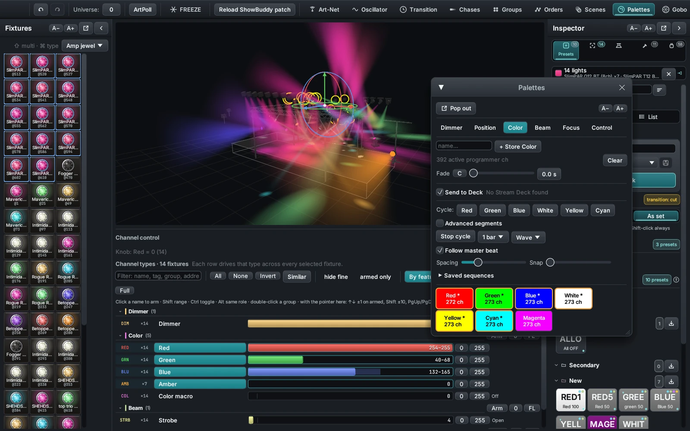
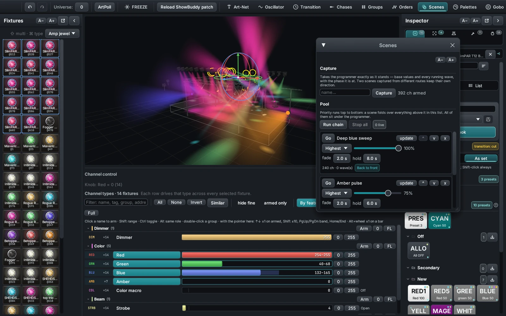
The Programmer sits on top of all playback. While a channel is in it, you control that
channel — not the cues. So when the faders and the Go button seem to do nothing, it is
almost always the Programmer still holding those channels. Press Clear prog,
or type clear, and playback takes the stage back.
Playback
Record your looks as cues, then play the show however the night wants it: a bottom strip of faders, a page of pads you busk from, or a command line you can drive without looking.
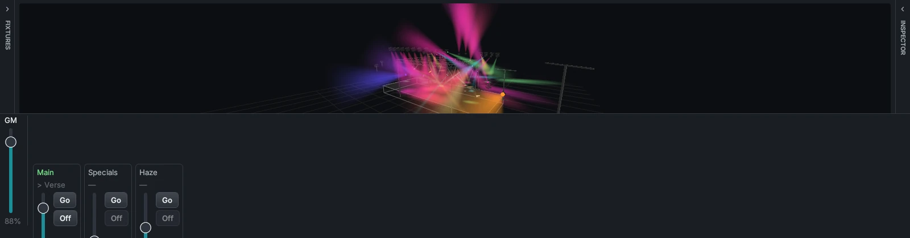
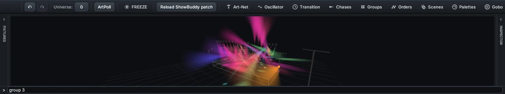
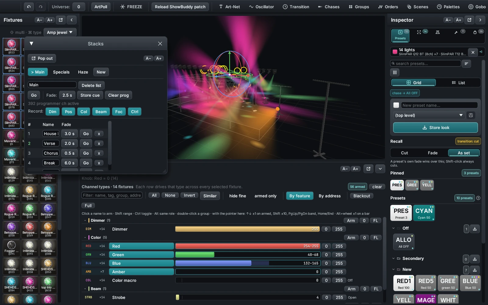
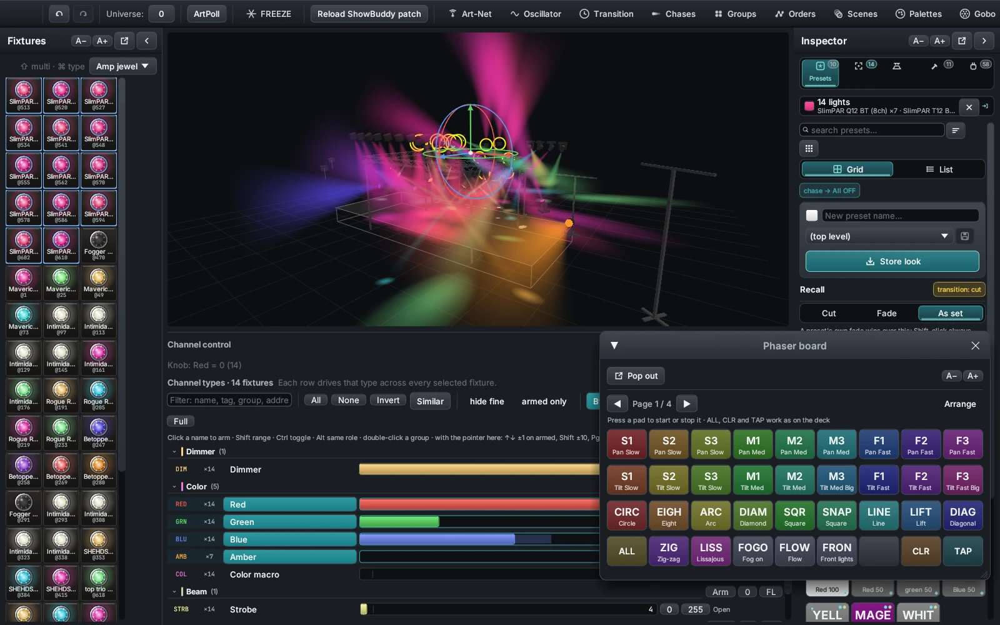
One box at the bottom of the window, one verb, Enter. Numbers are 1-based and in pool order, and anything the command line does not understand is reported in the Log rather than swallowed.
| Type this | And it does |
|---|---|
go · go 2 | Go on the current stack, or on stack 2 |
off · off 2 | Release every stack, or release just that one |
cue 3 | Jump the current stack to cue position 3 |
store | Store a cue into the current stack |
group 1 | Recall group 1 as your selection |
gm 80 · full | Grand Master to 80%, or back up to 100% |
clear | Release the Programmer so playback takes the output back |
black · bo | Blackout: release every stack and clear the Programmer |
Learn it properly
The guide is split into categories, then a page per window — so you read the three paragraphs you actually need instead of scrolling one giant manual.
What DMXexpress is, installing it, the screen layout, the Programmer, and a first show you can build in one sitting.
5 topicsPatching from the 2,200-model library, the fixtures panel, the 3D stage, trusses and towers, the inspector, settings, and whole-show configs.
8 topicsChannel control, groups, custom effect orders, palettes and why they are referenced, gobo picking, presets, layered scenes, and transition timing.
8 topicsPhasers and their component builder, the oscillator and custom waveforms, chases, palette sequences, audio triggers, and beat sync with the time machine.
6 topicsCue stacks and tracking, the decks executor bar, the Stream Deck surface, the full command-line vocabulary, and saved views.
5 topicsArt-Net targets, the DMX monitor, freeze versus blackout, the log, files on disk, script plugins, and a troubleshooting page.
7 topicsHow it fits together
Search the 2,200-model library, use a built-in profile, or import a ShowBuddy patch on macOS.
Place fixtures, towers, and truss in the 3D stage view — or start from an included sample setup.
Pick fixtures directly on stage and save the selections you use most as Groups.
Build looks in the Programmer while watching the visualizer respond live.
Keep reusable values as Palettes, Presets, and Phasers.
Capture cues into Stacks with tracking and fade timing.
Run the show from the Decks with faders and Grand Master — or busk it from a Stream Deck.
Select an Art-Net interface and send DMX to a node or visualizer.
Most of the console answers to the keyboard, and the ones below are the ones you will wear out first.
| Keys | What they do |
|---|---|
| Alt + 1…5 | Jump to an Inspector tab — Presets, Selection, Stage, Build, Patch |
| Alt + I | Fold the Inspector away, or bring it back |
| 1…9 over the stage | Fly the camera to the angle you saved on that key |
| 1…8 in Build | Build a tower, straight or radius truss, goalpost, box, ring, tower pair or arch |
| Arrow keys | Nudge the selected lights across the stage |
| Shift-click | Add a light to the selection; ctrl-click takes every light of that type |
| Space bar | Tap the tempo, whenever the Beat window is open |
| Ctrl + Shift + Z | Undo the last thing you did anywhere in the console, ten steps deep |
| Ctrl + Shift + Y | Redo it |
See it in action
Uncropped screenshots of DMXexpress doing what it does: chases sweeping the rig, phasers mid-flight, and the palette pool that drives it all.
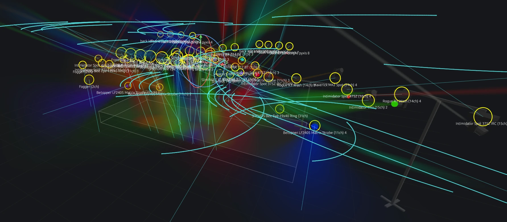
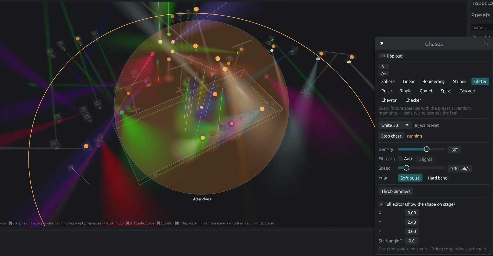
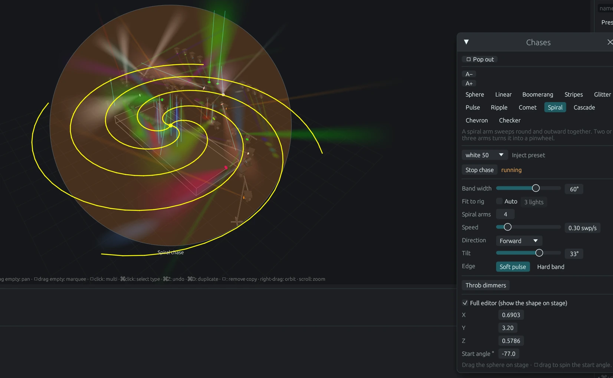
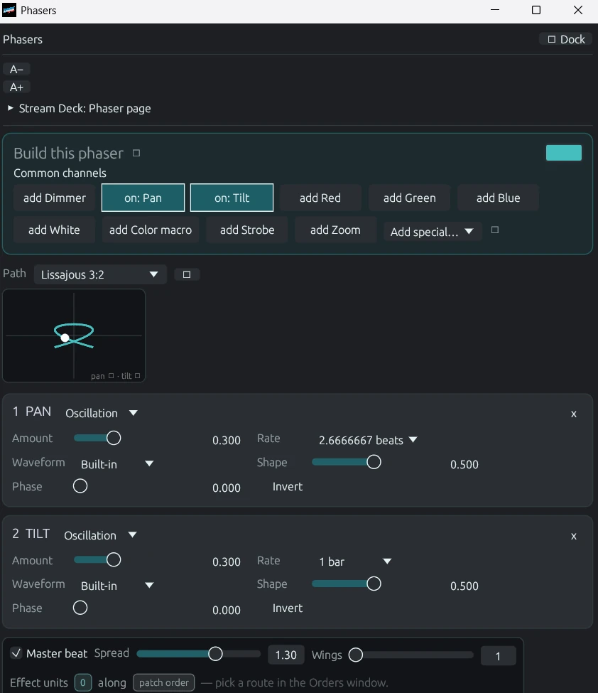
Out of the computer
Pick a protocol — Art-Net, sACN, or both at once — and an interface, and DMXexpress streams two contiguous universes at about 40 frames a second. When a node stays dark, the Network screen tells you what is wrong in plain words instead of leaving you to guess.


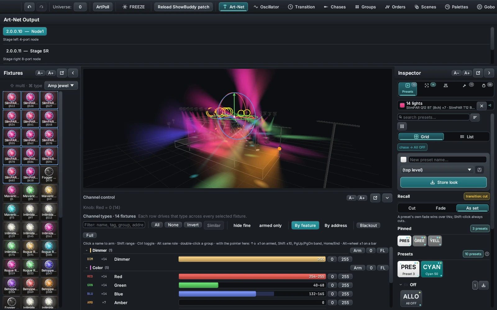

Art-Net, sACN, or both together. Broadcast, directed broadcast to the interface's own subnet, unicast to one node, or a unicast copy to every node that answered an ArtPoll.
One finding per row, graded by how bad it is, saying what is wrong and what to do about it. It reads the same state the rest of the screen shows, so it is never out of date.
Send every slot full on, walk one slot up the universe, or hold a single channel — for as long as you set, then the show comes back. The monitor keeps the last fifty packets.
DMXexpress transmits live lighting data. Confirm the interface, the universe numbers, the patch and the Grand Master before you plug into a rig with people standing under it.
Gobos
The visualizer renders each beam through the gobo that light is actually showing. Haze inside the cone breaks into the gobo's rays, and the pool where the beam lands is the projected image, turning with the fixture's gobo rotation channel.
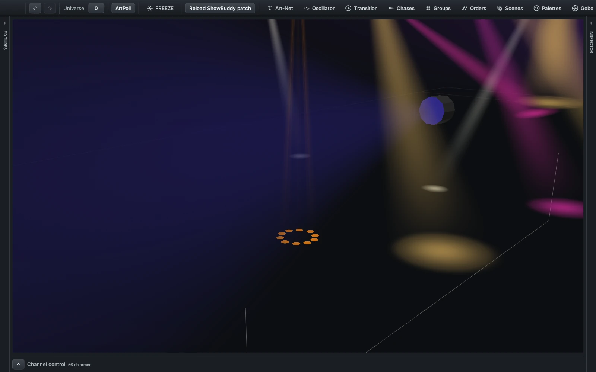

The catalogue is built from QLC+ and the Open Fixture Library: about a thousand images filed by maker — Chauvet, Clay Paky, GLP, Robe, SGM and a generic set — plus a named set with keywords.
When the patch is built, every gobo wheel channel is matched against those definitions by maker and model, so your lights arrive with their real slots already on them. A slot with no picture throws a plain cone.
Press Assign pictures and click a tile to choose what that slot projects, searching the catalogue by name, keyword and maker. Drop a PNG into fixtures/gobos/ and it turns up there too.
Extend & connect
DMXexpress now runs sandboxed script plugins, and the community lives right here on the site — a message board plus a reviewed plugin registry.
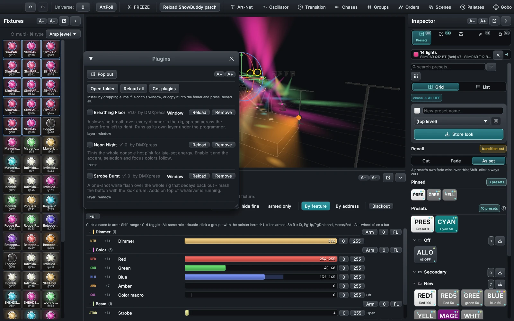
One script file adds a new effect layer, a custom control window, or a whole console re-tint. Browse the registry, drop a file on the app, done — and submit your own with a GitHub link.
Browse the marketplaceAsk questions, share show files and screenshots, post plugin links, and report bugs. Sign in with Google, pick a username, and you are in — delete anything you wrote, any time.
Join the boardDownload
Get the current Windows, macOS, or Linux release. The Windows download is one standalone executable with its runtime and built-in profiles included.
Get started
You'll need a current Rust toolchain with Cargo, a GPU supported by wgpu, and macOS or a compatible Linux desktop. An Art-Net node is only needed for live output — the visualizer works with nothing else on the network.
# run in development
cargo run
# optimized build
cargo build --release
./target/release/dmxpress
# run the tests
cargo testNetwork safety: DMXexpress can transmit live lighting data over Art-Net. Confirm the selected interface, universe, patch, and Grand Master before connecting to a live rig.
Open source
DMXexpress is under active development and licensed under the Mozilla Public License 2.0 — use it, modify it, and build on it. Issues, testing feedback, fixture profiles, and code contributions are all welcome.
The plugin system shipped: sandboxed scripts already add layers, windows, and looks — browse or submit plugins here. Next up: more output protocols, larger universe counts, and richer plugin hooks.